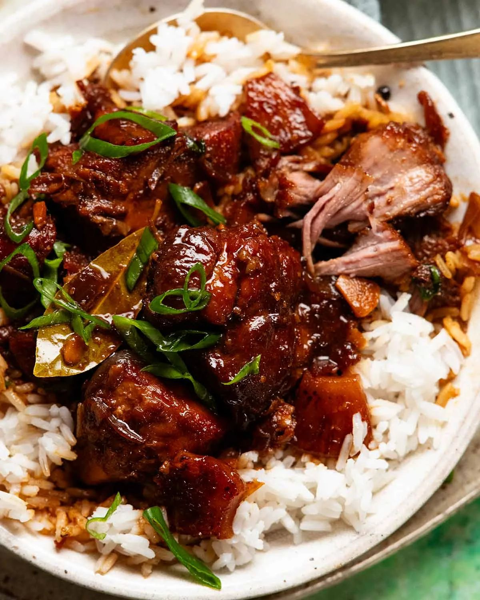

Filipino Pork Adobo with Pineapple

- Meal
- Dinner
- Serves
- 6
- Protein
- pork
- Cook
- stovetop · 20 min active / 2 hr total · easy
- Make-ahead / leftovers
- yes / yes
- Mediterranean
- no
- WW tier
- moderate
- Status
- Trying out (probation)
RecipeTin Eats' pork adobo — pork shoulder braised 90 minutes in soy, vinegar, garlic, bay, and brown sugar until fall-apart, the sauce reduced to a thin glossy syrup, with caramelized pineapple folded in. Sweet-salty-tangy; kids tend to love it. A low-effort braise for a home-all-afternoon day.
Ingredients
- 2.5 lb boneless pork shoulder, 2.5-inch cubes (fatty parts are good here)
- 2 1/2 Tbsp vegetable oil, plus 2 tsp for the pineapple
- 1 large onion, halved and cut into 1/3-inch wedges
- 10 cloves garlic, finely sliced
- 3 3/4 cups water
- 2/3 cup soy sauce
- 2 tsp dark soy sauce (optional, for color)
- 1/3 cup rice vinegar (or white vinegar)
- 1/4 cup packed brown sugar
- 2 tsp black peppercorns (optional)
- 6 bay leaves
- 1 can (20 oz) pineapple rings in juice, each ring cut into 8 pieces
- 1 green onion, sliced
- Brown rice, cooked, to serve (house rule: always brown — source uses jasmine)
Method
- Heat the oil in a large heavy pot over high. Sear the pork in two batches until golden all over, ~4 minutes each. Set aside.
- Lower to medium. Cook the onion 2 minutes, add garlic, cook 1 minute more.
- Add the water, soy sauces, vinegar, brown sugar, peppercorns, and bay leaves. Return the pork and its juices.
- Bring to a boil, then partially cover (1-inch gap) and simmer very gently 1 1/2 hours until fall-apart tender.
- Meanwhile, brown the pineapple pieces in 2 tsp oil in a nonstick pan over medium, ~4 minutes per side. Set aside.
- Lift out the pork. Boil the liquid on high until reduced to about 2 cups — a thin syrup, 7–10 minutes.
- Lower the heat; return the pork and pineapple, stir gently to coat, and warm through.
- Serve over brown rice with green onion.
Notes
- Scaled ×1.25 from RecipeTin's 2 lb pork / serves 4–5.
- Pineapple: the canned rings in juice are a pantry item, not a specialty buy.
- Kid-friendly: no chili at all. Peppercorns are whole — leave them out if the kids will bite one.
- Make-ahead: even better the next day; refrigerate, lift off the fat, reheat.
- Pork shoulder counts toward the ≤2 red-meat cap. Mediterranean ✗. moderate — fatty cut and sugar in the sauce.